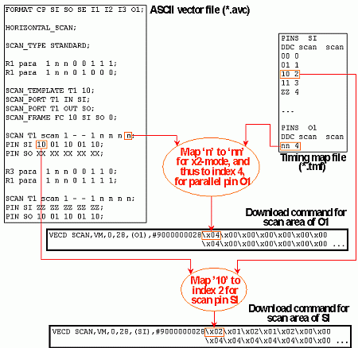
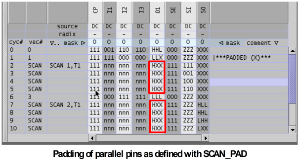

Creation of the Waveform DC/DC power units for the Parallel Part
The physical waveform DC/DC power units for the parallel part are by default created from the single state characters that occur in the first line of the ASCII scan instance. They are determined by creating n-tuples of the respective character, where n is the x-mode factor, and looking up these n-tuples in the timing map file.
The following figure shows an example:

The SCAN_PAD option
The vector that is repeated in the scan section on the parallel pins can be modified with the SCAN_PAD statement. This statement defines a padding character for a pin. If such a padding character is defined, the waveform index of the respective pin is determined from a state character sequence which starts with one occurrence of the character that is specified in the parallel part of the ASCII scan instance. The rest of the sequence consists of n-1 occurrences of the padding character (where n is the x-mode factor), as defined with SCAN_PAD. When the test is executed, this vector is repeated as often as required. As an example, consider the following ASCII vector file:
FORMAT CP SI SO SE I1 I2 I3 O1; HORIZONTAL_SCAN; SCAN_TYPE STANDARD; R2 sc_par 1 n n 0 0 1 1 H; R3 sc_par 1 n n 0 1 0 0 L; SCAN_TEMPLATE T1 10; SCAN_PORT T1 IN SI; SCAN_PORT T1 OUT SO; SCAN T1 sc_par 1 - - 1 n n n H; SCAN_PAD sc_par O1 X; PIN SI 10 01 10 01 10; PIN SO XX XX XX XX XX; R3 sc_par 1 n n 0 0 1 1 L; SCAN T1 sc_par 1 - - 1 n n n H; PIN SI ZZ ZZ ZZ ZZ ZZ; PIN SO HL LH HL LH HL;
If this file is translated with an x-mode factor of 3, the template length must be corrected from 10 to 12, and one padding vector must be added at the end of each of the scan instances. Therefore, the vector for the parallel pins must be repeated 4 times. In the expanded view of the pattern tool, this will look as follows:

Note that the waveform for pin O1 is HXX (not HHH), as defined with SCAN_PAD.